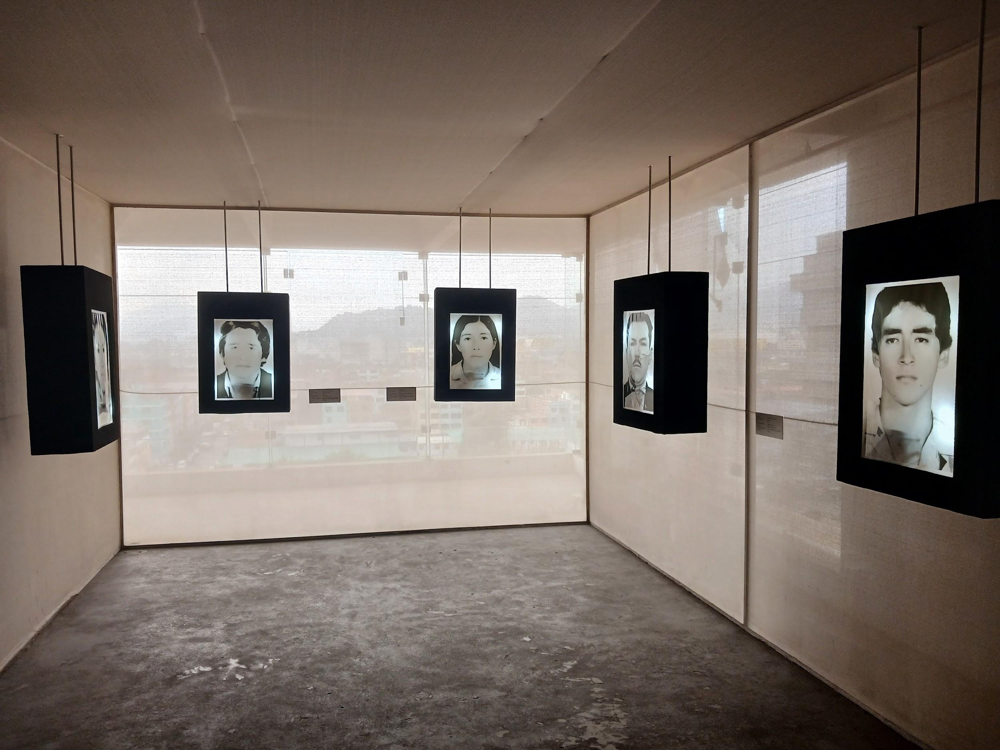
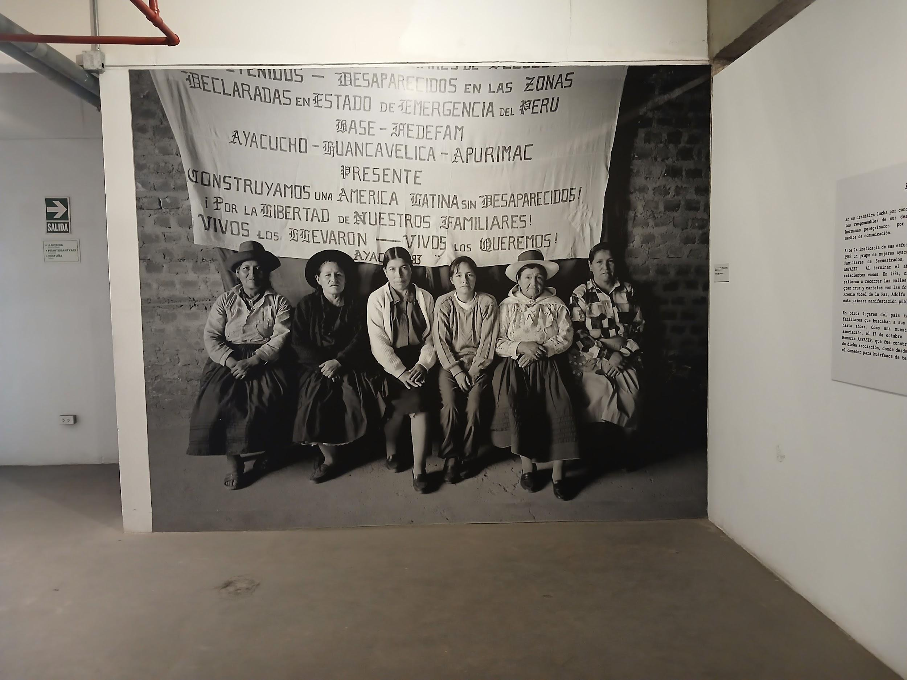
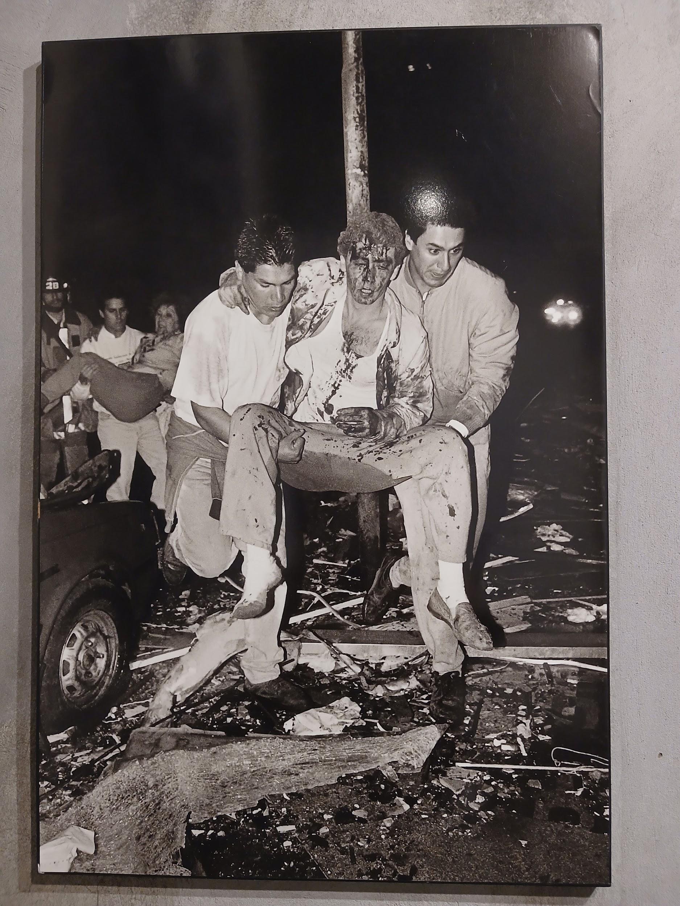
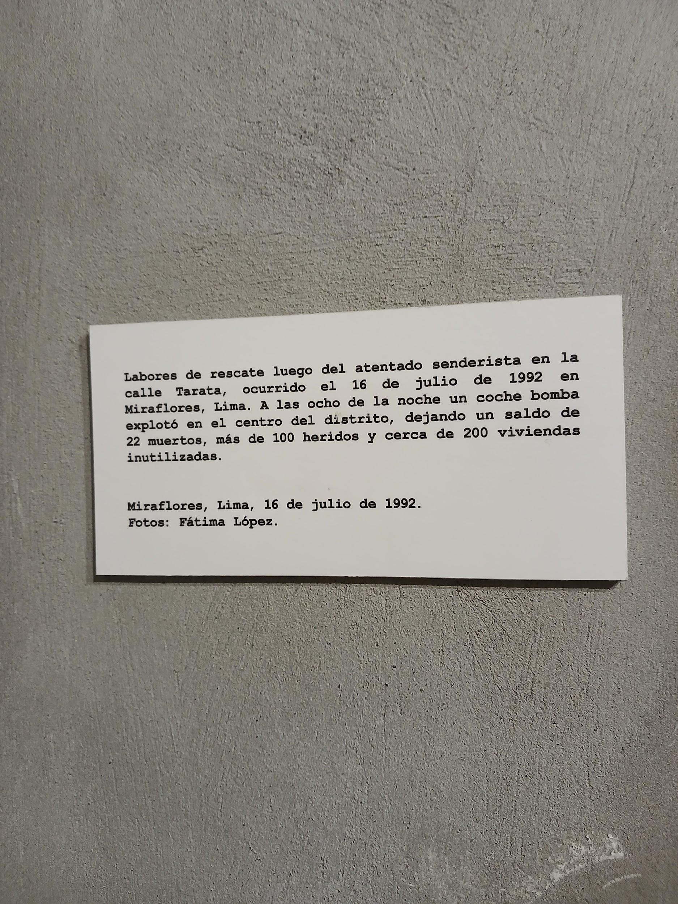

Introducción
Introducción
El lugar de memoria Yuyanapaq nos sirve como memoria de los sucesos que pasaron durante 20 años de conflicto en nuestro país. La curaduría encargada de la exhibición se ha encargado de organizar y seleccionar el material fotográfico; un trabajo realizado con intención, respeto, así como atención al detalle, siempre teniendo en cuenta a los espectadores. La CVR, la entidad encargada, se demoró alrededor de 2 años en recolectar y seleccionar fotografías, buscando en archivos personales de diversas familias para juntarlas con las más de 1700 fotos recolectadas.
Las fotografías ayudan a capturar un momento en la realidad, nos permite “teletransportarnos” hacia ese lugar viviendo las memorias de los actores involucrados, convirtiéndose en fragmentos de la vida material, involucrando un patrimonio que nos ayuda a poder generar nuestras propias ideas y conclusiones.
Estas imágenes son una forma de respaldo a los libros, periódicos u otros medios de la época, dando material a distintas verdades.
Hoy en día es un lugar no tan visitado por peruanos; al contrario, son varios la cantidad de extranjeros que acuden específicamente porque ya tenían un interés previo de este sitio. Mostrando así que luego de tanto tiempo, nuestro país sigue en camino a crear un proceso de reconciliación.
Ariana Higa
¿Por qué Yuyanapaq es una muestra fotográfica y no sólo histórica?
Yuyanapaq es una muestra fotográfica y no sólo histórica porque busca generar una conexión humana y emocional con cada uno de los acontecimientos ocurridos durante el conflicto armado interno en el Perú entre 1980 y 2000. Si bien existen hechos históricos que son respaldados por investigaciones, hacen uso de la fotografía para visibilizar las emociones y experiencias de quienes vivieron directamente aquella época de violencia.
Las imágenes nos permiten comprender que detrás de cada acontecimiento existieron personas. Personas afectadas por el miedo, la pérdida y el desplazamiento. Por ello, la exposición no existe solo con el fin de transmitir datos históricos, sino que se convierte en un espacio de memoria y reflexión, que invita a las nuevas generaciones a reconocer el impacto humano que hubo del conflicto.
Preguntas de análisis
¿Cómo las imágenes generan memoria y reflexión?
Las fotografías nos permiten acercarnos a hechos que percibimos lejanos. A través de ellas, las experiencias vividas por las víctimas adquieren un rostro humano, que logra captar la empatía de quienes las observan.
En Yuyanapaq, las fotografías evidencian el sufrimiento, la resistencia y las consecuencias que dejó la violencia en miles de peruanos. Se convirtieron en testimonios visuales que ayudan a preservar la memoria colectiva y evitan que estos hechos sean olvidados.
¿Qué elementos fotográficos destacan?
El uso de fotografías documentales, las cuales captan escenas reales del conflicto armado interno y funcionan como testimonios visuales de los hechos.
¿Qué impacto tiene la exposición en las nuevas generaciones?
Tiene un impacto significativo para las nuevas generaciones, ya que les permite conocer y comprender una de las épocas más dolorosas que vivió la historia del Perú no tan alejada del presente, desde una perspectiva humana y reflexiva.
Muchos jóvenes no lo vivieron directamente; por ello, la exposición de Yuyanapaq se presenta como una oportunidad para ellos, para acercarse más a los hechos de una forma más vívida a través de testimonios e imágenes que evidencian las consecuencias que sufrieron miles de compatriotas debido a la violencia.
Voces atrapadas en el tiempo
¿Cómo logra Yuyanapaq mantener viva la memoria de las víctimas del conflicto armado interno?
Voces atrapadas en el tiempo
Por María Isabel Ramos
La exposición sumerge al visitante en un recorrido por la memoria colectiva del país a través de retratos y testimonios de personas que vivieron los años más difíciles del conflicto armado interno. Las voces que se escuchan en el espacio reconstruyen historias marcadas por el dolor, la pérdida y la resistencia, permitiendo comprender cómo estos acontecimientos impactaron a comunidades de regiones como Huancavelica, Ayacucho, Huancayo, Apurímac y Junín.
Cada testimonio establece un vínculo emocional entre el pasado y el presente. Los relatos no sólo informan sobre los hechos ocurridos, sino que también humanizan la historia al mostrar las experiencias de quienes fueron protagonistas o víctimas de aquel periodo.
La disposición de los retratos suspendidos genera la sensación de que las personas retratadas continúan presentes a través de sus recuerdos y de las huellas que dejaron en la sociedad.
Más que una muestra visual, la instalación se convierte en un espacio de reflexión que invita a reconocer la importancia de preservar la memoria histórica. A través de la combinación de imagen, sonido y narrativa, el visitante es transportado a una dimensión donde el pasado cobra vida y dialoga con las generaciones actuales.

Frente a la historia viva
¿Qué fotografía de Yuyanapaq genera un mayor impacto en el visitante y por qué?
Frente a la historia viva
Por María Isabel Ramos
Frente a los rostros de la memoria
Al ingresar a la muestra fotográfica Yuyanapaq, una de las primeras sensaciones es la de retroceder en el tiempo. Las fotografías exhibidas en tamaño real permiten al visitante sentirse parte de cada escena y observar de cerca los rostros de quienes vivieron los años más difíciles del conflicto armado interno en el Perú.
Una de las imágenes más impactantes muestra a familiares de personas desaparecidas reunidos frente a una pancarta en la que exigen verdad y justicia. Al observar, es imposible no detenerse en las expresiones de sus protagonistas. Sus miradas reflejan dolor, pero también perseverancia en la búsqueda de sus seres queridos.
El silencio que rodea la exposición contribuye a la experiencia. Lejos de ser un espacio común de exhibición, Yuyanapaq invita a la reflexión y al recuerdo. Cada fotografía parece contar una historia distinta y acercar al visitante a una realidad que marcó profundamente a miles de familias peruanas.
Esta imagen fue una de las más significativas dentro del recorrido porque logró generar una conexión inmediata con las personas retratadas. Más que observar una fotografía, sentí que estaba frente a frente con quienes vivieron esos acontecimientos. La experiencia me permitió comprender la importancia de preservar la memoria para que estos hechos no sean olvidados.

José Luis
Una noche de terror congelada en una fotografía
Una noche de terror quedó congelada en una fotografía. Entre los escombros que dejó la explosión de un coche bomba en la calle Tarata, dos hombres cargan a un herido mientras intentan ponerlo a salvo. La escena, captada en medio del caos, resume el dolor, la incertidumbre y las consecuencias de la violencia que golpeó al Perú durante el conflicto armado interno.
Exhibida en Yuyanapaq, la imagen trasciende el registro documental para convertirse en un símbolo de memoria. Cada detalle, los rostros agotados, las heridas y la destrucción que los rodea, recuerda el costo humano de aquellos años y la importancia de preservar el recuerdo de quienes sufrieron sus consecuencias.

